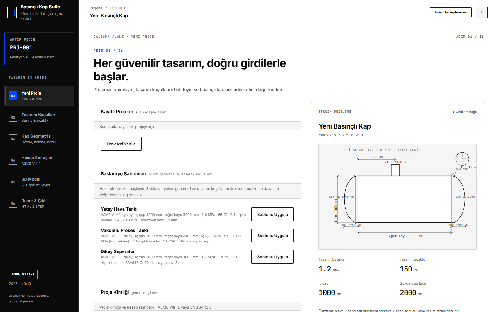
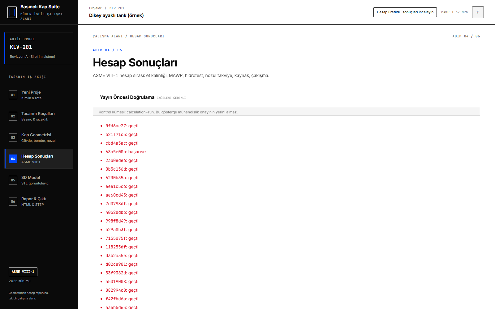

Basınçlı kap, içindeki akışkanı (sıvı ya da gaz) çevre basıncından farklı bir basınçta tutan kapalı bir kaptır. Günlük hayattan örnekler: kompresörün hava tankı, bir binanın kalorifer kazanı, doğal gaz hattındaki seperatör (gazı sıvıdan ayıran kap), sanayideki buhar kazanı. Bu kapların içinde basınç olduğu için cidarları (et kalınlığı) sürekli bir kuvvet taşır; yeterince kalın olmazsa kap patlayabilir, yaralanma ve büyük hasar olabilir.
Bu yüzden basınçlı bir kabın cidar kalınlığı, hangi basınca ve sıcaklığa dayanacağı, nereden delinip boru bağlanacağı gibi her ayrıntı önceden hesaplanır. Bu hesaplar dünyada yaygın olarak ASME VIII-1 (Amerikan makine mühendisleri birliğinin basınçlı kap standardının birinci bölümü) veya EN 13445 (Avrupa basınçlı kap standardı) gibi standartlara göre yapılır. Standart, hesabın nasıl yapılacağını ve hangi güvenlik paylarının kullanılacağını tarif eder.
Vessela (zeyslabs-vessela), bu hesapları adım adım yapmanızı sağlayan bir web uygulamasıdır. Amacı; bir basınçlı kabın tasarım koşullarını, geometrisini ve malzemesini girerek gerekli et kalınlıklarını, izin verilen en yüksek çalışma basıncını, test basıncını, nozul (boru bağlantı ağzı) takviyesini, mesnet (kap taşıyıcısı) kontrollerini ve kütle/maliyet listesini tek bir yerde görmektir. Kime hitap eder? Basınçlı kap hesabını yeni öğrenen mühendis adaylarına, tasarımı ön boyutlandırmak isteyen mühendislere ve sonuçları anlamak isteyen teknik personele.
Vessela'nın YAPMADIĞI şeyler de en az yaptıkları kadar önemlidir. Uygulama resmî onay vermez, ASME damgası (yetkili imalat belgesi) üretmez, PED (Avrupa Birliği Basınçlı Ekipman Yönetmeliği) ve CE uygunluk kararı yerine geçmez ve imalata esas tasarım raporu sayılmaz. Sonuçlar her zaman yetkin bir mühendisin kontrolünden geçmelidir. Ayrıca uygulama; yorulma (tekrarlı yük), sünme (yüksek sıcaklıkta zamanla uzama), nozula gelen harici boru yükleri, rüzgâr/deprem yük üretimi, ceketli veya çok odalı kaplar gibi konuları kapsamaz. Bu sınırların tam listesi docs/limitations.md dosyasındadır; kapsam ve her hesabın güncel durumu için docs/calculation-coverage.md okunmalıdır.
Vessela bir ön boyutlandırma ve mühendis incelemeli prototip aracıdır. Sonuçları imalat, satın alma veya güvenlik kararı için tek başına kullanmayın; mutlaka bir mühendise doğrulatın.
2. Neyi bulmak için hesap yapıyoruz?
Aşağıdaki her çıktı, kabın güvenli ve imal edilebilir olup olmadığını anlamak için ayrı bir soruya cevap verir.
Gerekli et kalınlığı: Basıncı taşımak için cidarın en az ne kadar kalın olması gerektiğidir. Sonuç, "bu basınç altında cidar en az bu kadar kalın olmalı" demektir.
Nominal kalınlık: Sipariş edilecek sacın (plakanın) kalınlığıdır. Gerekli kalınlığa korozyon payı ve üretim kayıpları eklenip sac toleransı hesaba katılarak bulunur. Sonuç, "imalatçıya bu kalınlıkta sac sipariş et" anlamına gelir.
MAWP (kabın taşıyabileceği en yüksek çalışma basıncı): Mevcut kalınlık ve malzemeyle kabın güvenle çalışabileceği en yüksek basınçtır. Sonuç, isim plakasındaki ve emniyet vanası ayarındaki basıncın üst sınırını verir.
Hidrostatik test basıncı: Kabın imalat sonrası suyla doldurulup test edileceği basınçtır. Sonuç, "testte bu basınca kadar çıkarılacak" demektir; basınç, MAWP'nin üzerinde bir güvenlik kontrolüdür.
Nozul/açıklık takviyesi: Kap cidarında boru bağlamak için açılan deliğin etrafındaki malzemenin yeterli olup olmadığıdır. Sonuç, "delik cidarı zayıflattı; takviye pedi (destek plakası) gerekiyor mu?" sorusunu cevaplar.
Mesnet/ayak kontrolü: Kabı taşıyan eyer, etek veya ayakların ağırlık ve momentler altında zorlanmasını inceler. Sonuç, "taşıyıcı yeterince güvenli mi, ankraj/taban plakası yeterli mi?" demektir.
Dış basınç/vakum: Kabın dışarıdan gelen basınca (vakuma) karşı burkulmaya dayanıp dayanmadığıdır (ASME UG-28/UG-33). Sonuç ön kontrol niteliğindedir; gerekli A/B faktörü girilmezse sonuç yayımlanmaz.
MDMT/gevrek kırılma: Malzemenin düşük sıcaklıkta gevrekleşip çatlama riskine karşı izin verilen en düşük metal sıcaklığıdır (UCS-66). Sonuç basitleştirilmiş bir ön kontroldür.
Flanş: Cıvatalı flanş bağlantısının gerilmelerinin kontrolüdür (Appendix 2). Y, f, W, M gibi değerler girilmezse sonuç yayımlanmaz.
Basınç tahliye: Emniyet vanası gibi tahliye elemanının kap için yeterli olup olmadığına dair ön kontroldür (UG-125 ve devamı); boyutlandırma yapmaz.
Kaynak doğrulama: Kaynak türü, muayene oranı ve malzeme için standardın kurallarına uyulup uyulmadığının denetimidir (UW-11/UW-12, UCS-56).
Kütle/maliyet (BOM): Kabın parçalarının listesi, ağırlığı ve yaklaşık maliyetidir. Sonuç, satın alma ve teklif için malzeme/işçilik fikri verir.
3. Hesap nasıl yapılır? (sade anlatım)
Et kalınlığı hesabının mantığı dört temel büyüklüğe dayanır: basınç (içerideki kuvvet), çap (kuvvetin etki ettiği genişlik), malzeme dayanımı (malzemenin ne kadar gerilmeye dayandığı) ve kaynak verimi (kaynaklı birleşimin ne kadar sağlam sayıldığı). Buna ek olarak korozyon payı (paslanma/aşınma için eklenen kalınlık) ve sac toleransı (sacın sipariş edilenden biraz ince gelebilmesi) hesaba katılır.
Burada t gerekli kalınlık (mm), P tasarım basıncı (MPa), R iç yarıçap (mm), S izin verilen gerilme (MPa) ve E kaynak verimidir. Boyuna gerilme için kod ayrıca t = P × R / (2 × S × E + 0,4 × P) formülünü kullanır; iki sonuçtan büyük olan geçerlidir. Kaynak: packages/code-asme-viii-1/src/code_asme_viii_1/formulas.py.
Bombe (kabın kubbeli ucu) için 2:1 elipsoidal bombe formülü (UG-32(d), K = 1):
t = P × D / (2 × S × E − 0,2 × P)
Burada D bombe iç çapıdır. Torisferik ve yarım küresel bombeler için kodda ayrı formüller vardır. EN 13445 seçilirse silindir, bombe, koni ve düz kapak için ayrı (ve dar kapsamlı) bir hesap rotası çalışır; EN seçeneği "tam EN tasarımı" anlamına gelmez ve bu rotada nozul, destek gibi bazı kontroller yoktur.
Gerekli kalınlık bulunduktan sonra sipariş edilecek nominal kalınlık şu şekilde hesaplanır:
t_nominal = (t_gerekli + C + şekillendirme_incelmesi) / sac_tolerans_faktörü
Burada C korozyon payıdır. Sac toleransı %12,5 ise faktör 0,875 alınır; yani sac en kötü durumda sipariş edilenin %87,5'i kadar kalın gelebilir. Bu yüzden paylar bölmenin içinde tutulur.
Örnek hesap 1 — silindirik gövde. Golden test dosyasındaki (tests/golden_cases/test_hand_calc_ug27_ug32.py) değerlerle: iç çap 1800 mm olduğu için R = 900 mm, tasarım basıncı P = 2,5 MPa, izin verilen gerilme S = 138 MPa, kaynak verimi E = 1,0 ve korozyon payı C = 0 alınıyor.
Pay (bölünen): P × R = 2,5 × 900 = 2250
Payda: S × E − 0,6 × P = 138 × 1,0 − 0,6 × 2,5 = 138 − 1,5 = 136,5
t = 2250 / 136,5 = 16,4835 mm → 16,484 mm
Boyuna kontrol: 2250 / (2 × 138 + 0,4 × 2,5) = 2250 / 277 = 8,123 mm; bu daha küçük olduğu için çevresel sonuç belirleyicidir.
Örnek hesap 2 — 2:1 elipsoidal bombe. İç çap D = 2000 mm, tasarım basıncı P = 2,0 MPa, S = 138 MPa, E = 1,0, C = 0:
Pay: P × D = 2,0 × 2000 = 4000
Payda: 2 × S × E − 0,2 × P = 276 − 0,4 = 275,6
t = 4000 / 275,6 = 14,5138 mm → 14,514 mm
Bu iki sayı, test dosyasındaki beklenen değerlerle birebir aynıdır. Dikkat: bu örneklerde korozyon payı sıfır alınmıştır; gerçek projede korozyon payı ve sac toleransı eklendiğinde sipariş edilecek nominal kalınlık daha büyük çıkar.
MAWP hesabı, aynı silindir formülünün tersine çevrilmiş hâlidir. Uygulama şu formülü kullanır: P = S × E × t / (R + 0,6 × t). Burada t, nominal kalınlıktan korozyon payı, sacın eksi toleransı ve şekillendirme incelmesi düşüldükten sonra kalan kalınlıktır (silindir ve bombede MAWP bu düşülmüş kalınlıkla hesaplanır; ayrıntı için hesap notlarına bakın). Hidrostatik test basıncı ise ASME UG-99(b) yaklaşımıyla 1,3 × MAWP × LSR olarak hesaplanır; LSR, test sıcaklığındaki izin verilen gerilmenin tasarım sıcaklığındaki gerilmeye oranıdır. Sıcaklık arttıkça malzeme zayıflar; test ise daha düşük sıcaklıkta yapıldığı için basınç, bu farkı dengelemek üzere LSR ile artırılır. Pnömatik testte katsayı 1,1'dir (UG-100).
İzin verilen gerilme (S), akma ve çekme dayanımı gibi malzeme değerleri telifli standart tablolarında yer alır. Bu değerleri uygulamadan veya bu kılavuzdan almayın; malzeme sertifikanızdan ya da elinizdeki lisanslı standarttan kendiniz girin.
4. Siteyi kullanma akışı (6 adım)
Uygulama soldaki menüde altı adım izler. Her adımın alanları ayrı bir bölümde ayrıntılı anlatılır; burada yalnız amacı özetlenir (bkz. alan anlatımı).

Şekil: Açılış ekranı — altı adımlı menü, kayıtlı projeler ve hazır şablonlar.
Yeni Proje: Projeye numara, ad, müşteri ve revizyon verilir; hesap standardı (ASME VIII-1 veya EN 13445) ve kabın yatay/dikey yönelimi seçilir. Hazır şablonlar (hava tankı, vakumlu tank, seperatör) başlangıç için geometri ve koşulları doldurabilir.
Tasarım Koşulları: Çalışma/tasarım basıncı ve sıcaklığı, korozyon payı, dış basınç/vakum ve akışkan bilgileri girilir. Bu değerler bütün hesapların temelini oluşturur.
Kap Geometrisi: Gövde zinciri (silindir/koni), bombeler, nozullar, manşonlar ve mesnetler tanımlanır; malzeme ve kaynak birleşimleri seçilir. Sağdaki 3D önizleme girdileri canlı gösterir.
Hesap Sonuçları: Kalınlık, MAWP, test basıncı, nozul takviyesi, destek ve BOM sonuçları durum etiketleriyle listelenir. Her satır açılarak ara değerler, uyarılar ve varsayımlar görülebilir.
3D Model: Girilen geometri üç boyutlu olarak incelenir, kesit alınabilir ve model dışa aktarılabilir (STEP/STL). CAD görsel amaçlıdır; hesabın kaynağı değildir.
Rapor & Çıktı: Sonuçlar HTML rapor olarak üretilir; PDF/STEP çıktısı ve açınım (imalat şablonu) seçenekleri sunulur. Rapor, mühendis incelemesi için okunabilir bir özet sağlar.
Şekil: Adım 1 — Yeni Proje ekranı ve hesap rotası seçimi.Şekil: Adım 3 — Kap geometrisi, gövde zinciri ve 3D önizleme.Şekil: Adım 5 — 3D Model görünümü.Şekil: Adım 6 — Rapor & Çıktı ekranı.
5. Sonuçları nasıl okurum?
Her hesap satırı bir durum taşır. PASS (geçti), girilen değerlerle kontrolün sağlandığını gösterir. FAIL (başarısız: bir sınır aşıldı), bir sınırın aşıldığını gösterir; kalınlık artırılmalı veya tasarım değiştirilmelidir. REVIEW_REQUIRED (inceleme gerekli), hesabın çalıştığını ama sonucun tek başına yeterli olmadığını, bir mühendisin bakması gerektiğini anlatır. Bazı durumlarda sonuç BLOCKED (engelli) olur; bu, gerekli bir girdinin (örneğin malzeme gerilmesi veya lisanslı tablo değeri) eksik olduğu anlamına gelir ve sayısal sonuç yayımlanmaz.
Sonuç ekranında ayrıca uyarılar (notices) ve varsayımlar listesi bulunur. Uyarılar; eksik veri, emniyetsiz yönde yapılmış bir varsayım veya mühendis kararı gerektiren bir durumu bildirir. Varsayımlar ise programın sizin yerinize kabul ettiği değerlerdir (örneğin sac toleransının %12,5 alınması, su yoğunluğunun 1000 kg/m³ kabul edilmesi). Bu listeyi mutlaka okuyun; çünkü sonucun hangi kabuller üzerine kurulduğunu gösterir.

Şekil: Hesap Sonuçları — durum etiketleri ve özet göstergeler.
Ne zaman mühendise danışmalı? Şu durumlarda sonucu tek başınıza yorumlamayın: REVIEW_REQUIRED veya BLOCKED satırı varsa; malzeme gerilmesini emin olmadan girdiyseniz; nozul eğik veya büyük açıklık söz konusuysa; destek hesabında katsayıları (Zick yöntemindeki K1-K7 gibi; Zick, yatay kaplardaki eyer mesnetlerinde cidar gerilmesini hesaplayan yöntemdir ve K değerleri bu yöntemin tablo katsayılarıdır) elle girdiyseniz; sonuçlar imalat veya güvenlik kararı için kullanılacaksa. Ayrıca iki farklı hesap yolu birbiriyle çelişiyorsa (örneğin kalınlık ve MAWP yolu farklı bombe oranı varsayıyorsa) mühendis değerlendirmesi gerekir.
6. Önemli uyarılar
Küçük açıklık muafiyeti (UG-36(c)(3)) sizin sorumluluğunuzdadır. Nozul ayrıntıları ekranındaki üç onay kutusu (kap hızlı basınç dalgalanmasına maruz değil, komşu açıklık aralığı koşulları sağlanıyor, bağlantı kaynaklı) kullanıcı beyanıdır. Üçü de işaretlenmeden muafiyet uygulanmaz; uygulansa bile nozul boyun et kalınlığı kontrol edilir. Bu beyanların doğruluğundan siz sorumlusunuz.
Malzeme gerilmeleri şablonlarda boştur. Hazır şablonlar yalnız geometri ve tasarım koşullarını doldurur; izin verilen gerilme (S), akma ve çekme dayanımlarını girmez. Bu değerler girilmeden hesap hata verir veya engellenir. Değerleri malzeme sertifikasından ya da lisanslı standarttan kendiniz girin.
Sonuç bir mühendis tarafından doğrulanmalıdır. Vessela resmî onay, ASME damgası veya PED/CE uygunluk kararı vermez. Sonuçlar ön boyutlandırma amaçlıdır; imalata esas tasarım, bağımsız mühendis kontrolü ve gerekiyorsa onaylanmış kuruluş süreci ile tamamlanmalıdır. Kapsam dışı konular (yorulma, sünme, harici boru yükleri vb.) ayrıca değerlendirilmelidir.
7. Sözlük
Basınç
Bir yüzeye birim alana etki eden kuvvettir; burada genellikle MPa (megapaskal) ile ifade edilir.
Çalışma basıncı
Kabın normal işletme sırasında içinde bulunan basınçtır.
Tasarım basıncı
Hesaplarda kullanılan, çalışma basıncından daha yüksek seçilen güvenli basınç değeridir.
Tasarım sıcaklığı
Kabın tasarım ömrü boyunca görebileceği en yüksek (ve ayrıca en düşük) sıcaklıktır; malzeme dayanımı sıcaklıkla değişir.
MAWP
Maximum Allowable Working Pressure; kabın mevcut kalınlığı ve malzemesiyle güvenle çalışabileceği en yüksek basınçtır.
İzin verilen gerilme (S)
Malzemenin güvenlik payı uygulanmış hâlde taşıyabileceği gerilme değeridir; standart tablosundan veya sertifikadan alınır ve kullanıcı tarafından girilir.
Akma dayanımı
Malzemenin kalıcı olarak şekil değiştirmeye başladığı gerilme seviyesidir.
Çekme dayanımı
Malzemenin kopmadan önce taşıyabildiği en yüksek gerilmedir.
Et kalınlığı
Kabın cidarının (sacın) kalınlığıdır; milimetre cinsinden ifade edilir.
Gerekli kalınlık
Basıncı taşımak için cidarın en az sahip olması gereken kalınlıktır.
Nominal kalınlık
Sac üreticisinden sipariş edilen, gerekli kalınlığa paylar eklenmiş kalınlıktır.
Korozyon payı
Kabın ömrü boyunca paslanma ve aşınma nedeniyle kaybolacak metal için baştan eklenen kalınlıktır (C).
Sac (mill) toleransı
Sacın sipariş edilen kalınlıktan izin verilen ölçüde ince gelebilmesidir; %12,5 tolerans, sacın en kötü durumda nominalin %87,5'i kadar olabileceği anlamına gelir.
Şekillendirme incelmesi
Sacın bombe gibi biçimlere bükülürken incelmesidir; kalınlık hesabına eklenir.
Kaynak verimi (E)
Kaynaklı birleşimin, kaynaksız malzemeye göre ne kadar dayanım taşıdığını gösteren 0 ile 1 arası katsayıdır; muayene (NDT) arttıkça genellikle yükselir.